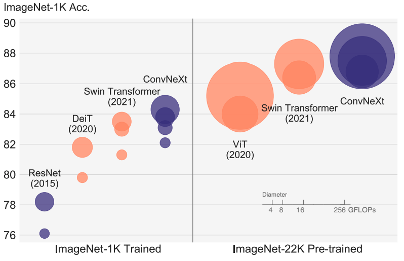
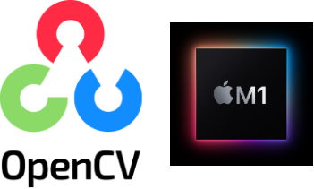
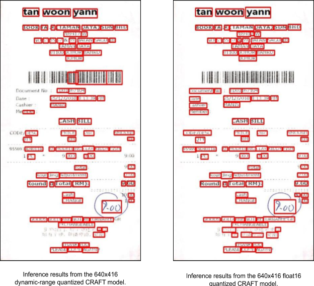
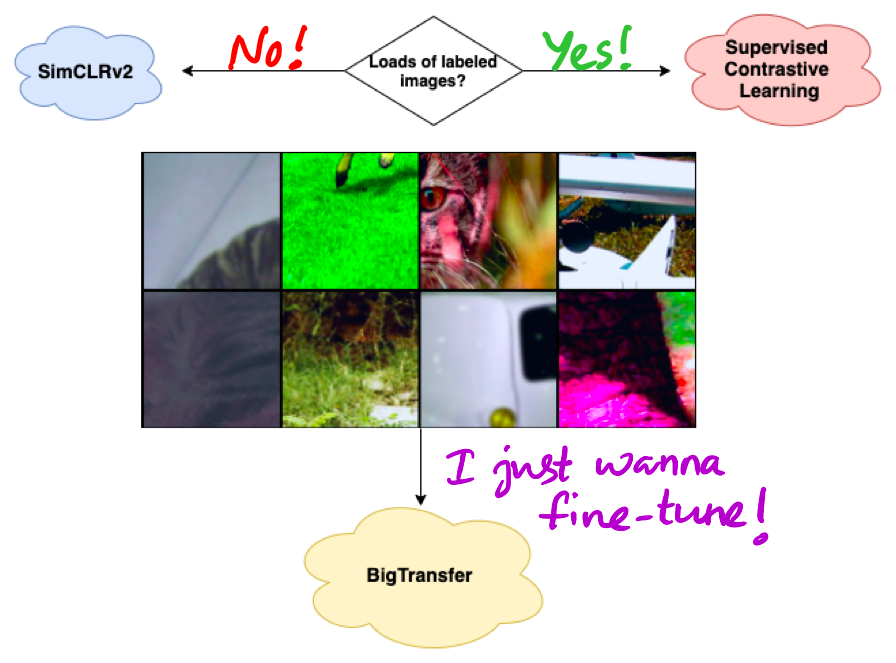
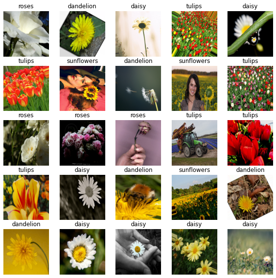
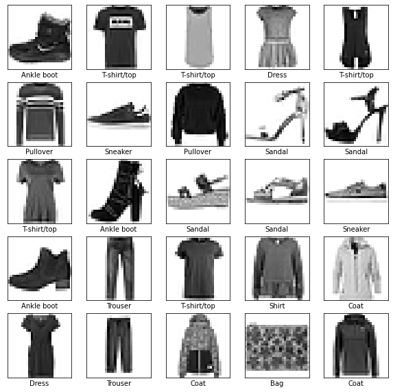

Sayak Paul
About Me
Authoring
Blog
Research
Resources
Blog
Flavors of attention in modern diffusion models
Different forms of attention mechanisms, used in modern diffusion models.
Feb 27, 2025
Streamlining PyPI Releases: A Case Study with 🧨 Diffusers
Learnings from streamlining the PyPI releases of 🧨 Diffusers.
Mar 15, 2024
Another Quarto Migration Guide for fastpages Users
Some tidbits of migrating from fastpages to Quarto.
Jan 17, 2024
Practicing ML in a Non-ML Job
Thoughts on learning and exercising ML skills.
May 27, 2022
First Steps in GSoC
Sharing my perspective on two primary questions related to Google Summer of Code.
Mar 13, 2022

Publishing ConvNeXt Models on TensorFlow Hub
Converting PyTorch ConvNeXt models to TensorFlow and publishing them on TF-Hub.
Feb 3, 2022
Distributed Training in TensorFlow with AI Platform & Docker
Training a model using distributed training with AI Platform and Docker.
Apr 6, 2021

Building and Installing OpenCV 4.5.0 on an M1 Mac
This post shows how to build and install OpenCV 4.5.0 on a MacBook Pro that comes with an M1 chip.
Jan 1, 2021

A Battle of Text Detectors for Mobile Deployments: CRAFT vs. EAST
This post compares two Deep Learning-based text detectors CRAFT and EAST with respect to deployment-specific requirements.
Nov 27, 2020
Sayak Paul, Tulasi Ram Laghumavarapu
Optimizing MobileDet for Mobile Deployments
Learn about the criticalities of effectively optimizing MobileDet object detectors for mobile deployments.
Sep 29, 2020
The Maker Philosophy with ML APIs
Practising being a maker with Google Cloud Platform’s ML APIs.
Sep 25, 2020

A few favorite recipes in computer vision & deep learning
This blog post enlists a few of my favorite recipes in deep learning in the context of computer vision (as of August 2020).
Aug 2, 2020
Using TensorRT for accelerated deep learning inference
Accelerating inference of TensorFlow models using TensorRT.
Jul 1, 2020

Different data augmentation recipes in
tf.keras
for image classification
Learn about different ways of doing data augmentation when training an image classifier in
tf.keras
.
May 10, 2020
Sharing your work online effectively
A few tips on sharing your work online effectively.
Apr 20, 2020

Embedding an image preprocessing function in a
tf.keras
model
Learn how to embed an image preprocessing function in a
tf.keras
model.
Apr 13, 2020
No matching items